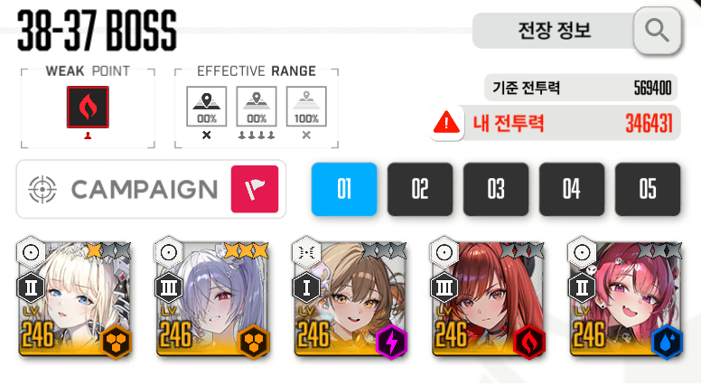
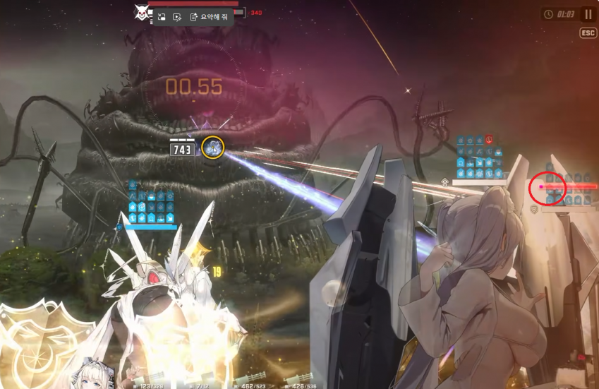

사실 글러트니는 할배들 공략글들이 정보글에 너무 잘 정리가 되어있어서 굳이 필요한가 싶지만
도발 타이밍 쉽게 잡는거 알려주고 싶어서 간단하게 공략글 써보려고함

내가 클리어한 조합임
각설 있긴하나 너무 늦게떠서 육성이 더 잘 된 수렐로 때림
5니케 모두 다 장비 4310 스킬 10
라피 우코 80 공증 14
- 영상 -
배치는 버충 높은 니케를 3번자리 고정 (사실 할배들 공략은 라피 15버를 위해 버충 가져가려고 배치한거지만 지금 보니 딱히 상관없기는 할듯)
글러트니 패턴
1. 싸대기 (니케 초상화에 빨간 테두리로 싸대기 날린다고 사전경고장 날림)
시작하자마 날리는 싸대기는 공이 제일 높은 니케 고정 -> 이후 랜덤
o 조우시 싸대기 - 화면스킵 후 빠르게 아니스로 한발 쏜 후 공 높은 3버 딜러로 교체 해서 엄폐컨
o 조우 싸대기 이후 두번째 싸대기까지 개별 엄폐컨 (크라운 벞쓰면 상관없으나 딜을 우겨넣어야 해서 메스트를 쓸 경우)
o 그 후 나오는 싸대기들은 메크메 - 크크메 - 크크메 순으로 쓰다보면 자연스럽게 크라운 보호막으로 넘겨짐
2. 5개 구체 날리기
글러트니 싸대기로 크라운 보호막 벗겨진 니케 엄폐컨 하면 된다는 글도 있지만
싸대기 맞지도 않은 다른니케가 죽어버리는 현상이 종종 나와서 그냥 전체엄폐로 넘기는게 속편함
3. 저지원
-움직이는 저지원은 원 안으로 때려야 온전한 딜 들어가고 원 밖을 노리면 뎀감
-가만히 있는 저지원은 일반적인 저지원
4. 즉사급 레이저
이 레이저는 총 4번 나오는데 이때마다 크라운 도발로 넘겨야함
1. 첫번째 저지원
저지원 들어가기 전에 크라운 16~17 스택맞춰놓고 있다가 원 뜨자마자 딜
(영상 00:37 ~ 00:42)
2. 두번째 저지원
첫번째 저지원 패턴 이후 글러트니가 싸대기를 2번 날리는데
크라운 18~19스택을 만들어 놓고 2번째 싸대기 날리자마자 딜
(영상 1:10 ~ 1:40)
3. S자 저지 완료하고 글러트니 나올때
S저지 하고 나서 버스트를 채우자마자 바로 누르고
크라운 19스택을 맞춰놨다가

남은 버스트 게이지가 빨간원처럼 실금일때 때려주면 크라운 도발로 패턴 씹기 가능
(영상 2:18 ~ 2:50)
4. 마지막 저지원 이후 광역기 시전 다음에 나오는 레이저
광역기 전 뎀감원 -> 저지원 패턴이 나오는데
이 구간에서 크라운 13~15스택 만들어 놓기
(3:35 ~ 4:00)
5. 광역기
딱히 신경 안써도 되는 패턴인데 영상에서는 메스트를 썼지만
트라이 할떄 마지막에 나오는 광역기에서 메스트로 극딜시전 하다가 전멸하는 경우도 있었음...(이거 왜 그런지 잘 모르겠음)
딜이 딸리는게 아니라면 맘편히 크라운 보호막으로 넘기면되고 딜 딸리면 메스트로 극딜 뽑자
공략끝